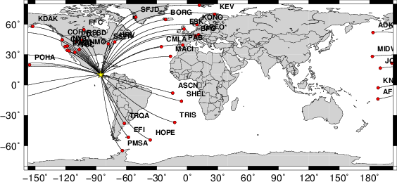
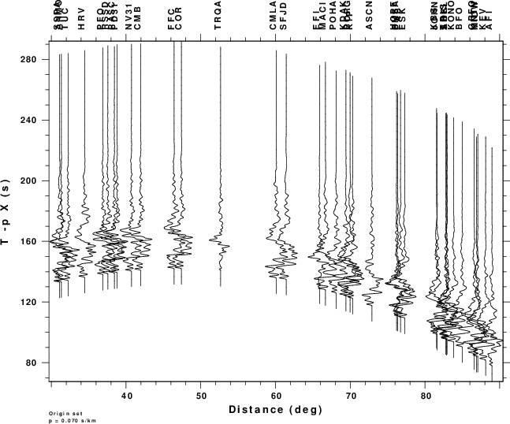
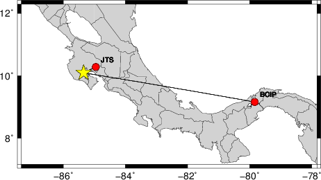
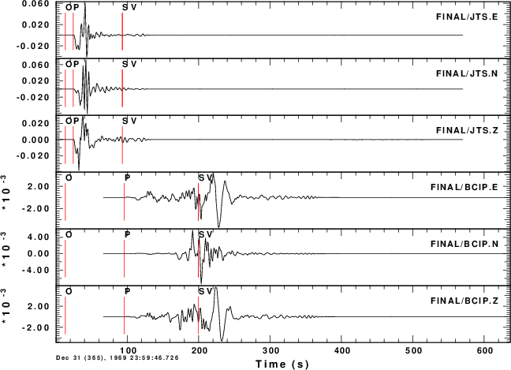
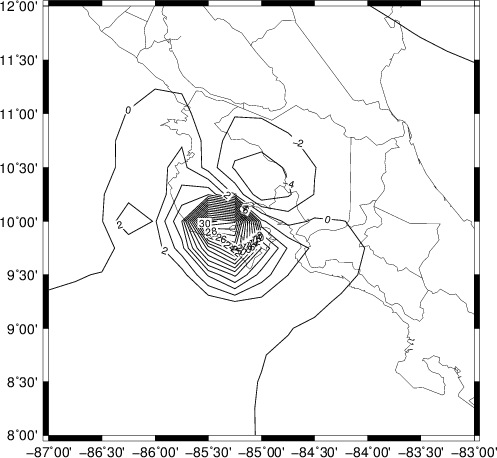
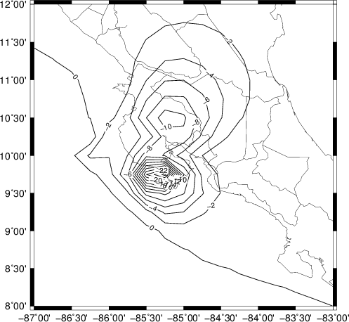
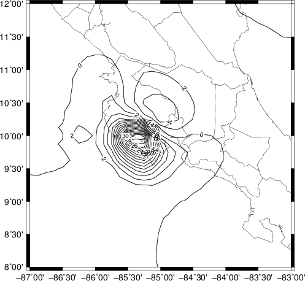
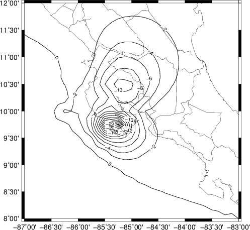
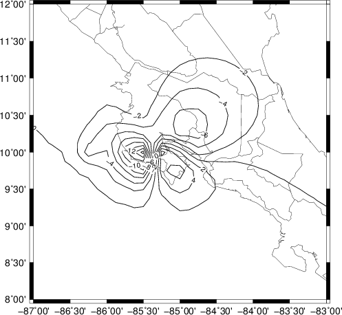

The USGS NEIC provides Finite Fault Models for larger earthquakes. An example of this is at href="http://earthquake.usgs.gov/earthquakes/eqinthenews/2012/usc000cfsd/finite_fault.php">http://earthquake.usgs.gov/earthquakes/eqinthenews/2012/usc000cfsd/finite_fault.php.
This tutorial shows how to use the Computer Programs in
Seismology codes to compute teleseismic vertical component
P-wave synthetics, regional vertical north and east (ZNE)
synthetics and finally static deformation from the published
finite-fault solution.
This tutorial is an extension of the following:
Finite Fault Synthetics
Static Deformation Finite Fault
The finite fault model is that of the Costa Rica earthquake of
2012/09/05 14:42:00, which is the subjet of the first tutorial.
This tutorial provides a unified organization to organize and
compute teleseismic P-waves, regional waveforms an regional
deformation
To run the simulations, you will need the following:
FINITE_FAULT/
|------index.html
|------Models/ [Velocity models]
| |----tak135sph.mod
| |----CUS.mod
| |----WUS.mod
|
|--FiniteFaultModels/
| |----HayesCostaRica.mod
| [Rupture model for Costa Rica
| earthquake 2012/09/05]
|
|-------FINITE.TEL/
| |-----index.html
| |-----DOIT.TEL
|-------FINITE.REG/
| |-----index.html
| |-----DOIT.REG
|----FINITE.STATIC/
| |-----index.html
| |-----DOIT.STATIC
map ksntm on global on ray on
sh map.sh
# if GMT5 is installed comment the previous line and # then uncomment the next two #map5 ksntm on global on ray on #sh map5.sh
to read
#map ksntm on global on ray on
#sh map.sh
# if GMT5 is installed comment the previous line and then
# uncomment the next two
map5 ksntm on global on ray on
sh map5.sh
I assume that you are in the top level directory FINITE.
cd FINITE.TEL
DOIT.TEL
This simulation computes teleseismic P-wave signals using the tak135sph.mod model and the HayesCostaRica.mod rupture model.
The DOIT.TEL creates the subdirectories WORK, STACK and FINAL in this directory. The stacked teleseismic synthetics are Sac files in the subdirectory FINAL.
This example creates the following files:
ADK.Z ASCN.Z CMB.Z EFI.Z GRFO.Z JOHN.Z KEV.Z KONO.Z NV31.Z PD31.Z POHA.Z SHEL.Z TRQA.Z
AFI.Z BFO.Z CMLA.Z ESK.Z HOPE.Z KBS.Z KIP.Z MACI.Z PAB.Z PFO.Z RSSD.Z SSPA.Z TUC.Z
ANMO.Z BORG.Z COR.Z FFC.Z HRV.Z KDAK.Z KNTN.Z MIDW.Z PASC.Z PMSA.Z SFJD.Z TRIS.Z
The DOIT.TEL also creates the graphics files map.png and finite_tel.png which are shown in the next figure:
|  |
 |
cd FINITE.REG DOIT.REG
This simulation computes regional signals using the WUS.mod model and the HayesCostaRica.mod rupture model.
Because wavenumber integration is used, the computations will be lengthy. So the control file, dfile, was created as follows for each subfault to each station
cat > dfile << EOF
${DIST} 1.0 512 -20 8.5
EOF
The 1.0 indicates a sample rate of 1.0 sec, the 512 indicates the number of points in the time series, and the first time sample is given by t = -20 + DIST/8.5. The computational time is such that if I had used 0.5 sec and 1024 points to include higher frequencies, then the time woudl increase by a factor of 4. I thought that my chose here was appropriate since the finite fault model was constructed using long period data.
The DOIT.REG creates the subdirectories WORK, STACK and FINAL in this directory. The stacked teleseismic synthetics are Sac files in the subdirectory FINAL.
This example creates the following files:
BCIP.E BCIP.N BCIP.Z JTS.E JTS.N JTS.Z
The DOIT.REG also creates the graphics files map.png and finite_tel.png which are shown in the next figure:
|  |
 |
cd FINITE.STATIC DOIT.STATIC
This simulation computes static deformation for the WUS.mod model and the HayesCostaRica.mod rupture model. Since hstat96 computes the solution for a multilayered halfspace through numerical integration, this example runs a long time. On the other hand if hsanal96 is used to compute the halfspace solution, the computations are then very, very fast.
Two sets of GMT plots are created. The first is a direct contour of the deformation values, and the second is a contour plot after applying the surface command of GMT.
|  |
 |
|
|  |
 |
 |